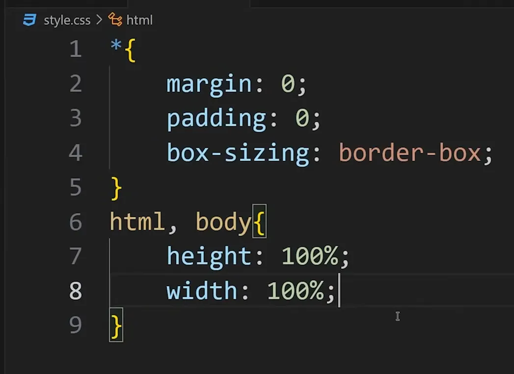
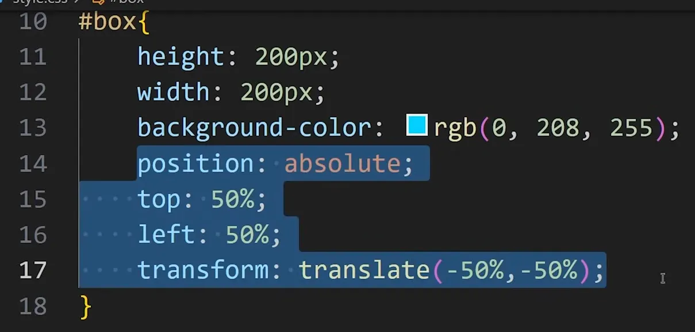
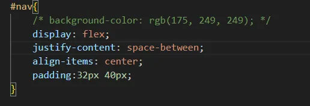
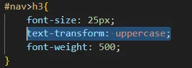
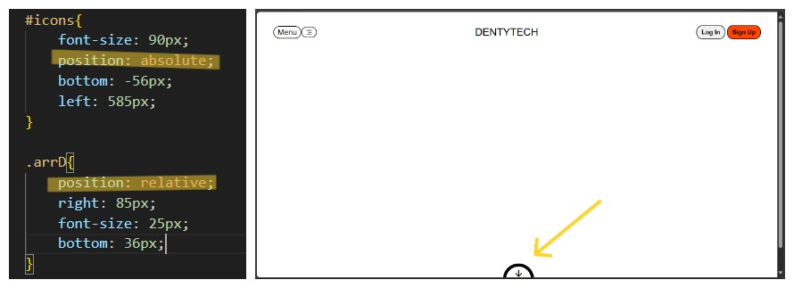
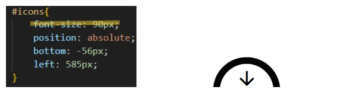
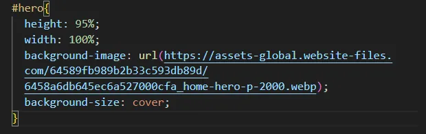
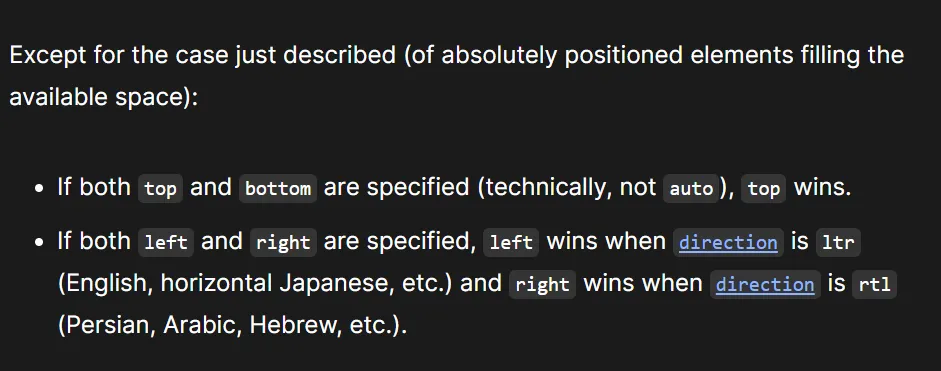

Usefull Document
Introduction
CSS stands for Cascading style sheets is used to style HTML documents. It is used to describe how the html elements will look on the screen. The flow of CSS implementation is from the top to the bottom of CSS file. For the absolute positioned elements, the element which is whritten in the lower end of the html file is stacked upper in the web page. The html elements have no background color by default.
CSS Types
Inline CSS
using style tag. Ex- <body style="background-color: #eaf6f6;" >
inline css has more priority than internal css.
Internal CSS
usint style element.
Ex-
<style media="screen">
body{
background-color: #eaf6f6;
}
</style>
Overflow CSS Property
.webp)
.webp)
CSS boilerplate
How to set an element at the center of webpage
No use of position absolute with display flex
Basic Nav CSS
Upper Casing of Text
Position Property
Absolute or Fixed positioned Elements:
1. These two elements moved out of the normal document flow and shift at the top left position(keep in note that it is not ocupying any space there, you can think as if it is floating over there above the webpage) and behave like aline elements having no width and height.
2. Absolutely or Fixed positioned elements are moved from the normal document flow that's why they lost the space, if the element is block level then it behaves like an inlign element having no width and heigth occupying only the content space
Setting Icons Font size
Image covering area while usig img tag
We can show an image by two ways
1. By using img tag and object-fit, object position properties are used here to adjust image.
2. By using div element with background-image propery and background-size, background-position are used here.

When we want to use the same css property(like translate) to an element with different value but we don't want to overwrite it
ex-
Position Property:
static
The element is positioned according to the Normal Flow of the document. The top, right, bottom, left, and z-index properties have no effect. This is the default value.
relative
The element is positioned according to the normal flow of the document, and then offset relative to itself based on the values of top, right, bottom, and left. The offset does not affect the position of any other elements; thus, the space given for the element in the page layout is the same as if position were static.
This value creates a new stacking context when the value of z-index is not auto. Its effect on table-*-group, table-row, table-column, table-cell, and table-caption elements is undefined.
absolute
The element is removed from the normal document flow, and no space is created for the element in the page layout. The element is positioned relative to its closest positioned ancestor (if any) or to the initial containing block. Its final position is determined by the values of top, right, bottom, and left.
This value creates a new stacking context when the value of z-index is not auto. The margins of absolutely positioned boxes do not collapse with other margins.
fixed
The element is removed from the normal document flow, and no space is created for the element in the page layout. The element is positioned relative to its initial containing block, which is the viewport in the case of visual media. Its final position is determined by the values of top, right, bottom, and left.
This value always creates a new stacking context. In printed documents, the element is placed in the same position on every page.
sticky
The element is positioned according to the normal flow of the document, and then offset relative to its nearest scrolling ancestor and containing block (nearest block-level ancestor), including table-related elements, based on the values of top, right, bottom, and left. The offset does not affect the position of any other elements.
This value always creates a new stacking context. Note that a sticky element "sticks" to its nearest ancestor that has a "scrolling mechanism" (created when overflow is hidden, scroll, auto, or overlay), even if that ancestor isn't the nearest actually scrolling ancestor.
Types of positioning
Key points for responsive web application
.webp)
.webp)
.webp)
.webp)
.webp)
.webp)
.webp)
.webp)
.webp)
.webp)
.webp)
.webp)
.webp)
.webp)
.webp)
.webp)
.webp)
.webp)
.webp)
.webp)
.webp)
.webp)
.webp)
.webp)
.webp)
.webp)
.webp)
.webp)